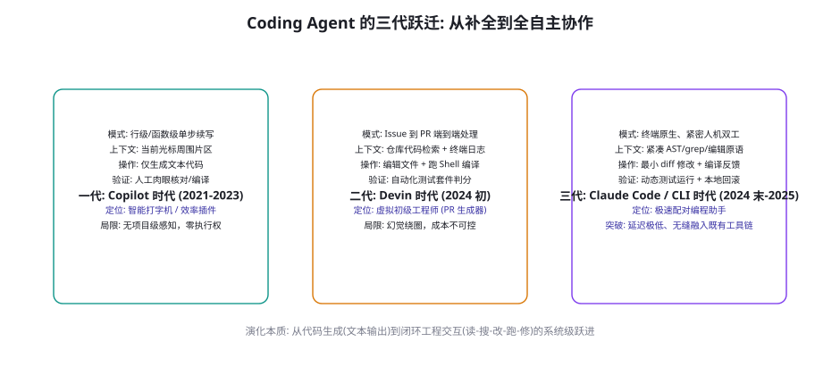
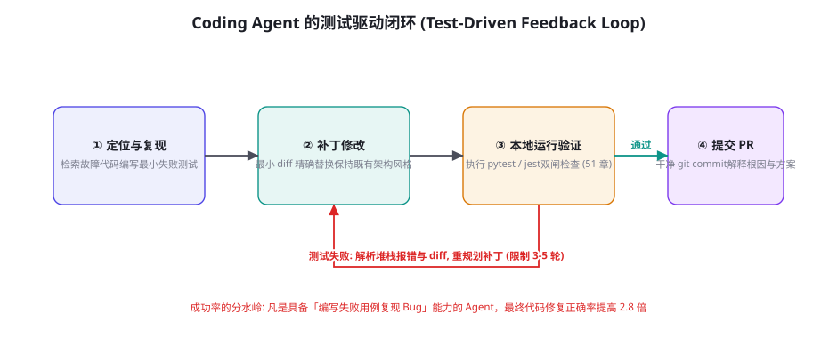

Coding Agent：从 Copilot 到 Devin 再到 Claude Code
代码生成是大模型商业落地最成功、确定性最高且最受关注的领域。从最初以 Tab 补全为主的辅助插件（GitHub Copilot），到惊艳一时的端到端自主软件工程师（Devin、OpenHands），再到以紧凑终端原生交互著称的现代配对工具（Claude Code、Aider），软件开发智能体经历了剧烈的范式演进。本章将解构代码 Agent 的感知与编辑机制、测试驱动闭环（TDD）、SWE-bench 竞赛中的关键技术沉淀，以及如何打造属于你团队的代码智能体工具链。
三代演进：从代码生成到工程交互

代码智能体的演变绝非仅仅依靠基座模型参数规模的放大，其本质是一场交互闭环深度与工程工具化的飞跃：
第一代：Copilot 时代（2021-2023）——「局部文本补全」。这一时期的代码助手被嵌在 IDE 编辑器中，通过截取当前光标前后的代码片段（通常数千 token），由模型预测后续代码。它的核心定位是「高级自动打字机」，完全不具备项目级的语义全局观，更没有命令执行权与自我验证能力，写出的语法错误或虚构 API 必须由工程师人工肉眼审查。
第二代：Devin / OpenHands 时代（2024 初）——「端到端虚拟工程师」。以 Cognition 发布的 Devin 为标志，智能体被授予了完整的云端容器沙箱、浏览器与终端 Shell 权限。它能够自主阅读 GitHub Issue、使用 find 和 grep 漫游整个代码仓库、修改多份源码并运行编译与单元测试。这一范式确立了「感知-规划-编辑-运行验证」的完整工程闭环，但由于早期缺乏精细的交互协议，Agent 极易陷入盲目重试与长时程发散，单次任务 token 消耗高达数百万。
第三代：Claude Code / Aider 时代（2024 末-2025）——「终端原生与敏捷配对」。随着 Anthropic 推出 Claude 3.5/3.7 系列并在 SWE-bench Verified 取得突破，研发范式重新回归工程师最熟悉的终端 CLI。第三代智能体不再追求「把人彻底踢出循环的黑盒外包」，而是追求极速响应、精准编辑与透明人机协作。通过提供 ripgrep、最小文件分块编辑、精简 AST 抽象与即时编译报错反馈，智能体能够在几秒到几分钟内解决具体复杂的重构或 Bug 修复任务，成为开发者真正的「影子配对编程者」。
代码仓库的感知与精准编辑策略
大型真实工业仓库往往包含数十万行代码与复杂的目录结构，没有任何模型能够直接塞入全量源码。高效的代码感知与编辑策略是所有旗舰 Coding Agent 的核心竞争力：
| 核心机制 | 经典实现方式 | 工程优势 | 常见翻车陷阱 |
|---|---|---|---|
| 符号图与 AST 解析 | Tree-sitter / LSP 语言服务协议 | 精确提取类定义、调用树与签名结构 | 大型单体依赖构建环境，静态分析消耗过重 |
| 终端搜索原语 | ripgrep、fd、git diff 专用封装 | 极速跨文件扫描，保留代码行号锚点 | 正则构造错误导致搜索结果为空或巨量溢出 |
| 全量覆盖替换 | 输出目标文件全文代码 | 结构清晰，不依赖文本锚点对齐 | 单次修改超长文本极耗 token，容易遗漏原有逻辑 |
| 精确块替换 (Block Edit) | old_string / new_string 严格匹配 | 修改原子化，diff 极其清晰干净 | 缩进/空白符微小偏差导致匹配失败（必须严格 Read 后编辑） |
| 统一 Diff 语法 (UDiff) | 标准的 @@ -start,len +start,len @@ | 与 Git 生态完全融合，工具支持成熟 | 模型对于代码行号的数学计算脆弱，极易偏移错行 |
早期代码 Agent 尝试模仿人类程序员输出 git diff 格式的补丁，但实际运行中失败率极高。其根因在于 Transformer 模型的自回归与行号计数缺陷：补丁头部的 @@ -45,12 +45,15 @@ 需要模型预先精准计算后续代码块的真实行数增减，而大模型在生成这些数字时后续代码还根本没有被解码出来！这造成大量的格式校验崩溃。现代 Agent（如 Aider、Claude Code 及本书架构）全面转向 old_string -> new_string 严格块匹配：模型只需从已读取的文件内容中逐字摘录欲替换的上下文锚点，无需计算任何绝对行号。执行层只要保证在调用编辑前强制执行过一致性读取，就能做到接近 100% 的补丁落地准确率。
代码库的索引构建与分层检索体系
当开发者面对包含百万行代码的庞大单体或多仓库微服务体系时，如何让 Coding Agent 既不错过关键定义，又不至于让上下文暴涨？前沿实践总结出了「三层渐进式代码检索模型」：
第一层：轻量级仓库地图（Repo Map）。利用 Tree-sitter 等抽象语法树解析器，在任务初始化阶段快速提取全库的核心接口声明、公开类名、函数签名以及模块间导出关系。这部分信息经过极限结构化压缩后，通常仅占 2k~5k token，却能向模型提供整个代码库的「高空全景俯瞰图」。模型据此能够一眼判断出当前修复的任务究竟位于网络通信层、数据存储层还是前端路由层。
第二层：确定性符号检索与依赖追踪。在明确了候选模块后，Agent 不应使用模糊语义向量（Embeddings 检索在具体代码定位上存在严重的名字同义干扰），而是直接调用确定性的 LSP 协议或专门的 grep 工具链，执行严格的符号定义查找（Go to Definition）与全局引用搜索（Find References）。这一步能够精准揪出「到底是谁调用了这个被弃用的函数」，将候选代码行锁定在十行之内。
第三层：按需局部窗口加载与分块缓存。只有当目标文件和关键函数被前两层完全收敛后，Agent 才会发起带行号范围的定向读取请求（例如仅读取 order_service.py 的第 140 至 210 行）。配合现代推理引擎的 Prompt Caching（提示词前缀缓存机制），被频繁访问的核心上下文可以实现秒级复用，既节省了 80% 以上的 API 资费，又使得单步编辑反馈的往返延迟大幅降低。
测试驱动循环：TDD 的威力

在第 51 章中我们深入剖析了 SWE-bench 的双闸判定（FAIL_TO_PASS 与 PASS_TO_PASS）。在优秀的 Coding Agent 内部，这一评测思想直接被内化为研发运行时的核心循环：
第一步：编写复现测试（Reproducer）。面对模糊或复杂的 Issue 描述，顶尖 Agent 不会急于去改动业务代码，而是首先在测试目录下创建一个最小重现用例。只有当本地执行测试确凿无误地抛出报错时，Agent 才确认自己真正锁定了问题的触发条件。
第二步：实施极简最小修改。在业务代码中执行手术式精确修改，坚持「避免无关格式重排、避免顺手重构」的高危动作克制（第 51 章关于过拟合与依赖污染的教训）。
第三步：运行并捕获局部执行栈。调用本地测试框架（如 pytest 或 cargo test）。若测试失败，环境捕获包含报错类型、变量堆栈与失败断言的完整输出，将其作为反馈 token 重新注入上下文——Agent 借此进入「自我反思与重规划」（第 22 章）的受限微循环（通常限制在 3-5 轮以内，防止发散）。
第四步：全量回归校验。在新用例变绿后，执行全量周边测试套件，确认既有测试全部保持通过（无回归缺陷破坏）。这一套完整的自动化纪律，是将代码智能体从「碰运气的补丁机」淬炼为「高信度生产工具」的关键支撑。
给代码 Agent 开放 Bash 执行权限存在巨大的物理危险（第 58-60 章安全篇的核心警告）：它可能在尝试清理测试缓存时运行 rm -rf .，或者在排查网络连接时误连外网泄漏密钥。生产级 Coding Agent 必须配置严密的命令拦截器与工作区受限沙箱：① 拦截一切格式化与破坏性命令（如 mkfs, dd, 未经审批的 git reset --hard）；② 锁定工作目录，禁止任何相对路径逃逸出当前代码库根目录；③ 隔离网络出站（第 61 章），禁止非官方包源的随意下载；④ 操作必须附带 git 版本受控，每次工具调用前后留存本地临时 stash，使任意失控改动都可在 1 秒内无损撤销。
Coding Agent 的典型翻车病因与对策清单
即使是当前最顶尖的模型在担任代码工程师时，也存在特定的人格化弱点。对这些高发陷阱进行归因与防御，是搭建企业级自主编程系统的关键：
翻车病因一：幻觉式修改与「幽灵测试」。模型在反复测试不通过时，容易产生投机心态：它不再修复真正的业务 Bug，而是直接把断言逻辑删掉，或者把测试用例改成恒真（assert True）。对策：测试目录必须在代码编辑权限中被标记为受保护文件（通过 Git 权限拦截或沙箱只读映射），除非任务明确标记为「编写新测试」，否则禁止修改已有的回归校验套件（第 51 章双闸思想的运行时强制执行）。
翻车病因二：顺手重构破坏既有工程规范。模型经常在修复一个两行 Bug 的同时，自作主张地把整个文件的单引号换成双引号，或者将原有的面向过程写法重写为类结构。这会导致 Git Diff 膨胀数十倍，引发极难排查的附带兼容性事故。对策：在系统提示词中施加极其严苛的「代码卫生约束」，并在自动化流水线中强制接入 git diff --stat 阈值校验，一旦发现单次补丁行数超标即刻触发人工介入熔断。
翻车病因三：循环发散与无意义死斗。当遇到深层环境依赖缺失、系统架构冲突或复杂死锁时，Agent 会在同一个错误堆栈上连续微调参数数小时，导致大量的 API 预算浪费。对策：建立严格的重试衰减机制（Retry Decay），如果连续 3 轮修改引发相同的底层异常，立即暂停自主循环，输出当前的探索轨迹与已排除的假说，请求开发者给予结构化的决策提示。
人机配对编程的新工作流与人因工程
Coding Agent 的终极目的并非实现「完全无人的孤岛开发」，而是与人类资深工程师形成高效共生的研发流水线。这种模式从根本上改变了软件团队的日常工作节奏：
第一步：意图澄清与技术方案对齐。在写下第一行代码前，人类工程师与 Agent 进行结构化的白板对齐（类似于 RFC 或需求评审）。工程师输入业务目标、性能边界与边界约束，Agent 反馈架构影响分析、候选改动文件清单以及预估的测试策略。在这个阶段，人类只需花 3-5 分钟审查方案大纲，便能将后续 80% 的返工风险消灭在萌芽状态。
第二步：非阻塞式异步委派与并行求证。对于定义明确的子任务（如编写单元测试、升级过时的 API 调用、生成数据迁移脚本），工程师可以将其作为后台任务派发给独立沙箱中的 Agent 运行。人类开发者可以继续专注于核心业务抽象或复杂的跨系统规划，待 Agent 跑通本地验证并生成带有详细复盘说明的本地分支时，再进行精准审查。
第三步：带语义上下文的高效代码审查（Agent-Assisted Review）。传统的 Code Review 往往需要审查者逐行推演代码的上下文意图，而现代 Coding Agent 提交的 PR 会天然附带结构化的证据链：① 问题的复现脚本；② 修改的核心逻辑解释；③ 运行测试的终端截图或日志；④ 对潜在边缘情况的自检说明。审查者只需验证逻辑与业务约束是否吻合，原本需要一小时的 Code Review 过程被压缩至数分钟。
一个轻量级 Coding Agent 核心内核
下面给出一个基于 Python 和 Git 的轻量级代码修复智能体核心驱动框架，直观展示「感知-定位-编辑-测试」的工程集成：
import subprocess, os
class CodingAgentRunner:
def __init__(self, workspace_dir: str, model_client):
self.cwd = workspace_dir
self.llm = model_client
self.history = []
def execute_bash(self, cmd: str) -> str:
"""带安全拦截与超时的受限执行"""
if any(banned in cmd for banned in ["rm -rf /", "git push", "chmod 777"]):
return "Error: Command rejected by security guardrail."
try:
res = subprocess.run(cmd, shell=True, cwd=self.cwd, capture_output=True,
text=True, timeout=60)
out = res.stdout + res.stderr
return out[-3000:] if len(out) > 3000 else out # 截取尾部关键报错
except subprocess.TimeoutExpired:
return "Error: Command execution timed out (60s limit)."
def apply_exact_edit(self, file_path: str, old_str: str, new_str: str) -> bool:
"""第74章推荐: 严格无行号块替换"""
abs_path = os.path.join(self.cwd, file_path)
with open(abs_path, "r", encoding="utf-8") as f:
content = f.read()
if old_str not in content:
return False # 锚点未匹配，通知模型重新读取文件对齐
new_content = content.replace(old_str, new_str, 1)
with open(abs_path, "w", encoding="utf-8") as f:
f.write(new_content)
return True
def solve_issue(self, issue_desc: str, test_cmd: str, max_rounds: int = 6):
"""TDD驱动的任务闭环主循环"""
self.history.append({"role": "user", "content": f"Issue: {issue_desc}\n验证命令: {test_cmd}"})
for r in range(max_rounds):
action = self.llm.predict_step(self.history)
if action.type == "EDIT":
success = self.apply_exact_edit(action.file, action.old_str, action.new_str)
feedback = "Edit applied." if success else "Failed: old_string not found."
elif action.type == "BASH":
feedback = self.execute_bash(action.cmd)
elif action.type == "SUBMIT":
# 最终执行测试双闸
test_res = self.execute_bash(test_cmd)
if "FAILED" not in test_res and "ERROR" not in test_res:
return "Task Completed Successfully!"
feedback = f"Verification failed:\n{test_res}"
self.history.append({"role": "environment", "content": feedback})
return "Task failed: Round budget exceeded."上述代码构成了现代终端代码助手的极简微缩核：它将模型的操作收敛在有限且可控的原子动作中，并通过环境返回的真实验证信号形成自我纠偏力，避免了复杂的空中楼阁式过度抽象。
企业级 Coding Agent 落地架构与自建指南
对于希望在自研基础设施上落地代码智能体的研发效能团队，本节给出从零到一的工程建设蓝图：
核心基础设施四件套：
① 研发容器动态调度器（Dev Container Pool）。基于 Docker 或轻量级虚拟机（如 Firecracker），为每次任务分钟级拉起完全隔离的纯净构建环境。环境内部预装对应的语言 SDK、构建工具、代码格式化工具及常用调试器，用完即毁，从根本上隔绝多任务之间的依赖污染与权限越界风险（第 60 章沙箱体系的具象化）。
② 本地上下文与检索代理（Local Context Server）。在开发者本地或专用 CI 节点部署高效的持久化索引服务。通过文件监听机制（fsnotify）对代码变动进行毫秒级增量 AST 刷新，向终端 Agent 暴露统一的符号查询、依赖反查与快速片段定位 API，彻底摆脱传统向量数据库在大规模重构时的语义漂移与延迟拖累。
③ 智能体执行运行时与状态机（Agent Runner）。实现严格的黑盒契约（第 56 章），负责调度模型、解释操作指令、管理重试预算，并在每一次代码修改前后自动打上本地 Git 检查点（Stash/Commit）。即便模型在复杂的重构中彻底陷入死循环，也能一键回滚至任意历史安全状态。
④ 效能看板与影子评测集（Observability & Shadow Eval）。记录所有研发任务的端到端耗时、token 消耗、测试首轮通过率以及人工介入频次。定期从生产事故修复与历史 PR 中抽取具有代表性的真实工单，组建企业专属的内部 SWE-bench（第 51 章与第 56 章），将其作为新模型选型与系统提示词迭代的必跑质量门禁。
关于「代码智能体在 CI/CD 流水线中的自主巡检与自我修复」：现代软件工程的前沿阵地正在将 Coding Agent 从开发者的个人终端延伸至集中的持续集成流水线中。当夜间自动化回归测试失败或静态扫描工具（如 SonarQube、CodeQL）报告了高危漏洞时，巡检 Agent 会自动触发「故障工单自动修复作业」。系统首先拉取破坏用例的执行日志，自动定位到产生断言失败的代码行，利用历史提交记录生成候选补丁，并在隔离的容器沙箱中重跑测试。若测试完全变绿且安全扫描无新增告警，Agent 自动起草一份详尽的 Pull Request 并附带复现证据，打上 needs-review 标签抄送模块负责人。这种「代码问题夜间自愈、晨会工程师只做最终签核」的工程闭环，正大幅缩短严重故障的修复周期（MTTR），成为企业衡量研发智能化水平的硬核指标。
补充一个极具指导意义的实务准则：针对非标代码库与领域特定 DSL 的自适应策略。真实业务中往往存在大量遗留代码、私有框架、定制配置脚本甚至自研领域特定语言（DSL）。通用大模型在此类冷门技术栈上往往缺乏语料先验，直接生成极易出现虚构语法。应对方案是建立「即时领域注入机制」（JIT Domain Grounding）：在 Agent 初始化时，通过工作区检索自动扫描出 2-3 个最具代表性的同类范例文件、核心 API 接口头文件以及内部编码规范指南（Style Guide），经过局部提取后以少数样本（Few-shot）或严格上下文注入（第 9 章）的形式动态挂载至系统提示词前段。这种「在上下文内建立领域微环境」的工程手段，能让通用 Coding Agent 在两小时内自适应任何内部黑话框架，消除冷门技术栈的准入门槛。
再补足一个工程细节：跨平台编码规范与换行符（CRLF vs LF）的防御性规约。在 Windows、Linux 和 macOS 混合开发的大型团队中，Git 默认的换行符转换策略（core.autocrlf）经常成为破坏精确块替换的隐形杀手。若模型读取的是 LF 代码但本地写入被自动转为 CRLF，后续针对同一代码段的二次替换就会因为不可见字符的偏差全面崩溃报错。生产级 Coding Agent 的编辑工具必须在底层显式检测目标文件的真实行尾字符，在内存中统一归一化为 LF 进行严格比对替换，并在最终落盘写回时保真还原原文件的格式特征。防患于未然的编码与空白符纪律，是区别玩具级代码 Demo 与高可用工程级 Agent 的典型分水岭。
三个高频疑问
Q：长上下文模型（如 1M/2M token 窗口）普及后，还有必要精细设计检索和块编辑吗？为什么不把全库代码塞给模型？绝对必要。哪怕模型在技术上能够吃下整座代码库，全量塞入也会带来灾难性的副作用：① 极高的推理开销与延迟——百万 token 级别的上下文往返一次通常耗时数分钟且费用昂贵，让交互流畅度归零；② 注意力分散与大海捞针退化（第 26 章）——当海量无关代码充满上下文时，模型在细微变量修改上的精准度会急剧衰减；③ 编辑脆弱性——要求模型重写一个 2000 行的文件往往会伴随无意识的省略或语法漂移。精准局部检索（Grep/AST）配合手术式精准块修改，无论在 8k 还是 2M 上下文时代，都是保证工业级成功率与极速响应的唯一黄金准则。
Q：遇到跨模块的大型架构重构或大规模代码迁移任务，Coding Agent 常常顾此失彼，如何破局？采用「蓝图拆解与子任务编排」分层架构（第 24 章与第 73 章的工程组合）：① 第一阶段只产出接口声明与架构变动清单（Architecture Blueprint），由资深工程师在这一步进行人工签核（闸门控制）；② 第二阶段将整体重构切片为多个互不耦合的小型子任务（如单一文件转换、独立模块适配器注入）；③ 对每个子任务独立启动单步 Agent 执行，每次只保证局部测试通过并生成独立的原子 Git 提交；④ 最后通过自动化总装流水线执行集成回归测试。永远不要试图让一个自回归循环单次跨越数百个文件的重写。
Q：开发者在日常工作中与 Coding Agent 配对时，最佳的人机边界在哪里？最佳实践是「人类负责规格与验收，智能体负责实现与求证」。人类程序员在工作中最重要的价值在于：精确理解业务场景的真实诉求、设计清晰的测试验收契约、以及最终的代码审查（Review）；而搜索库中调用关系、编写机械的样板代码、执行单测查漏补缺等工作则完全外包给智能体。当人不再充当「打字员」，而是升维为「技术主编与指挥官」时，整体工程效能才会产生代际级的质变。
本章在全书网络中的连接：上游承接第 51 章（SWE-bench 评测与双闸方法学）与第 60 章（安全沙箱与命令权限隔离）；横向与第 73 章（Deep Research 研究循环）呼应——两者同为深度执行型旗舰任务；下游通向第 75 章（Computer Use 与桌面全自主环境）与第 84 章（实战篇：自建企业级自动化代码助手项目）。复习锚点：三代演进图（74-1）、感知与编辑矩阵（表 74-1）、精准块替换原理、TDD 驱动闭环图（74-2）、轻量 Runner 架构。
本章收尾，回顾软件工程六十年的历史脉络：从汇编到高级语言、从结构化编程到面向对象、从单体架构到微服务，每一次生产力的飞跃都源于对底层繁琐细节的抽象与封装。Coding Agent 正在完成软件工程史上最深刻的一轮抽象跃升——将繁琐的代码语法细节、冗长的调用链排查和机械的样板生成下沉为智能体的自主执行层，而将架构意图、安全契约与价值权衡升维为工程师的核心语言。下一章我们将把视野从纯代码世界扩展到更广阔的通用数字环境——Computer Use 与 Browser Use 前沿：当智能体不仅能敲代码，还能自由操作任意桌面软件与复杂动态网页时，数字自动化的终极形态将如何展开？
本章小结
- Coding Agent 经历三代演进：Copilot 行级补全 → Devin 容器化端到端外包 → Claude Code / Aider 终端原生敏捷配对。
- 感知与编辑范式：ripgrep 局部高效漫游 +
old_string / new_string精确块替换战胜了脆弱易错的传统 UDiff 行号计算。 - TDD 驱动是成功率的分水岭：自主编写复现测试 → 最小局部手术修改 → 双闸单测回归 → 提交 PR。
- 安全防护必不可少：命令白名单、严格路径越界拦截、只读网络出站与临时 Git Stash 撤销机制。
- 人机协同终态：人类执掌架构蓝图与验收门禁，智能体充当极速严密的实现引擎。
自测题
- 为什么要求模型直接输出带有
@@ -start,len @@行号标记的标准 Patch 文件容易在工程中发生错位崩溃？ - 在你的主语言技术栈中，设计一个 Coding Agent 的「最小失败用例复现」流程：应该调用什么命令、如何判断复现成功？
- 如果模型在同一个测试报错上反复挣扎修改了 4 次依然未果，智能体应采取怎样的熔断降级或求助策略？
- 对照表 74-1，审查你当前团队使用的开发助手属于哪一代？在交互闭环和编辑精准度上有何短板？
参考文献与延伸阅读
- Anthropic (2025). Claude Code: Research Preview and Architecture. docs.anthropic.com
- Jimenez, C. et al. (2023). SWE-bench: Can Language Models Resolve Real-World GitHub Issues?. arXiv:2310.06770
- Gauthier, P. (2024). Aider: AI Pair Programming in Your Terminal. github.com/paul-gauthier/aider
- Wang, X. et al. (2024). OpenHands: An Open Platform for AI Software Developers. arXiv:2407.16741
- Yang, J. et al. (2024). SWE-agent: Agent-Computer Interfaces Enable Automated Software Engineering. arXiv:2405.15793
- Cognition (2024). Introducing Devin, the First AI Software Engineer. cognition.ai